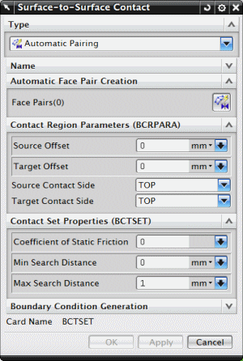

To define contact between two surfaces, use the Surface-to-Surface Contact simulation object.
You can either specify the contacting surfaces manually, or you can have the software automatically determine which pairs of faces come in contact with each other.
To manually specify source and target surfaces in the contact definition, you can select an existing Simulation Region or create a new one.
To have the software automatically determine the contacting surfaces, you can use the Create Automatic Face Pairs dialog box to specify the criteria the software uses to search for surfaces.

|
Note |
Surface-to-Surface Contact is solver-based and defines contact directly between two surfaces. Another similar command, Surface Contact Mesh, is element-based and defines contact with contact (or gap) elements defined between two surfaces. |